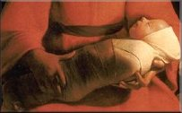
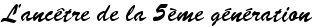

|
|
|
 

Source: the digitized Drouin collection
|
|
Joseph Choret
Born
September 25, 1719, in Montréal
Buried August 30, 1792, at Sault-au-Récollet
Father: Pierre Choret
Mother: Marie Angélique Turcot
|
Marie Anne
Lemay
Born
January 24, 1725, in Longue Pointe
Buried May 9, 1804, in Saint-Eustache
Father: Ignace Lemay Delorme
Mother: Anne
Marie Jeanne Lecompte Lavimodière
|
|
Married January 8, 1742, at Sault-au-Récollet
Here are their descendants: |
Marie Élisabeth Choret
Born January 2, 1743, at Sault-au-Récollet
Married January 7, 1765, at Sault-au-Récollet (under the name
Marie-Anne) to François- Amable Lécuyer.
2nd marriage September 1, 1806, at Sault-au-Récollet to Amable
Monet, widower of Josephte Prud'homme. |
Joseph Charles Choret
Born May
23, 1745, at Sault-au-Récollet
Died March 3, 1767, at Sault-au-Récollet. |
Marie Amable Choret
Born May 17, 1747, at Sault-au-Récollet
Married February 13, 1764, at Sault-au-Récollet to Jacques
Martineau, son of Mathurin and Marie-Joseph David.
2nd marriage February 22, 1802, at Sault-au-Récollet to Albert
Lebeau, widower of M-Thérèse Martineau.
Died May 4, 1813, at Sault-au-Récollet. |
Jean
Baptiste Choret
Born March
23, 1749, at Sault-au-Récollet
Married October 13, 1774, in Rivière des Prairies
to Marie-Josephte Lorain, daughter of Paul and
Marie-Joseph Rangé.
Died June 13, 1798, in Saint-Laurent, Montréal. |

see the website
devoted to him by
clicking the link above,
"The 14 generations" |
Pierre Choret
Born September
29, 1750, at Sault-au-Récollet
Married January 31, 1774, at Sault-au-Récollet to Marie
Marguerite Laplante Champagne, daughter of Michel and Marie Martineau. |
Marie Françoise Choret
Born October
28, 1752, at Sault-au-Récollet |
Marie Angélique Choret
Born October
2, 1755, at Sault-au-Récollet
Married February 23, 1778, at Sault-au-Récollet to Pierre Robrau
Duplessis, son of Pierre and Louise Beler.
Died August 24, 1793, in Saint-Laurent,
Montréal. |
François Choret
Born November 10, 1758, at Sault-au-Récollet
(Reached adulthood, since he was a witness at one of his
brother Louis's weddings) |
|
Marie Josephte
Choret
Born August
8, 1761, at Sault-au-Récollet
Married February 23, 1778, at Sault-au-Récollet
to François Godard Lapointe, son of François and Marguerite
Ranger. |
Joseph Choret (he
went by the name Louis)
Born June
15, 1765, at Sault-au-Récollet
Married January 10, 1791 (at age 25 according to the church record),
in Montréal, to Marie-Louise Dufresne, daughter of Philippe and
Marie-Joseph Ladouceur.
2nd marriage February 8, 1802, in Saint-Eustache to Marie-Charlotte
Cadieux, daughter of Joseph and Marie-Angélique Lafantaisie. His witness
was his brother Jacques.
3rd marriage February 19, 1816, in Ste-Rose de Laval to Marie-Louise
Jolicoeur, widow of François Bigras. His witness was his brother
François.
Died May 25, 1839, in Saint-Augustin-des-Deux-Montagnes. |
Pierre Choret (he
went by the name Jacques)
Born June
15, 1765, at Sault-au-Récollet
Married January 25, 1802 (at age 37 according to the church record),
in Saint-Eustache, to Marie Biore, daughter of Pierre and Geneviève
Demers. His witnesses were Louis and Antoine, the groom's brothers.
(Who is Antoine? Or did the priest make a mistake when writing the marriage
record?) |
|
Pierre Choret
Born
September 13, 1716, in Charlesbourg
Buried October 4, 1755, at Sault-au-Récollet
Father: Pierre Choret
Mother: Marie Angélique Turcot
|
Marie (Catherine)
Lemay
Born
March 27, 1723, in St-Laurent
Buried February 15, 1801, at Sault-au-Récollet
Father: Ignace
Lemay Delorme
Mother: Anne
Marie Jeanne Lecompte Lavimodière
|
|
Married January 8, 1742, at Sault-au-Récollet
Here are their descendants: |
Marie Madeleine Choret
Born November 1, 1742, at Sault-au-Récollet. Died September 7, 1756, at Sault-au-Récollet |
Pierre Choret
Born August 1,
1745, at Sault-au-Récollet. As an adult, Pierre settled in St. Louis, Missouri. |
Jacques Choret
Born May 30, 1747, at Sault-au-Récollet |
Marie Marguerite
Choret
Born ?
Married
April 19, 1773, at Sault-au-Récollet to Louis Lorrain, son of Pierre and Marie-Ursule Drapeau |
Joseph Marie Choret
Born August 9,
1750, at Sault-au-Récollet. Died December 24, 1753, at Sault-au-Récollet |
Jean Baptiste Choret (went
by the name Louis ref.: PRDH)
Born May
10, 1752, at Sault-au-Récollet
Married February 3, 1783, in Rivière-des-Prairies to Marie-Louise
Lorrain, daughter of Paul and Marie-Joseph Rangé.
Died July 5, 1810, in Montréal (ref.:
PRDH) |
Robert Choret
Born April
16, 1754, at Sault-au-Récollet |

|